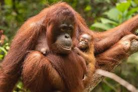
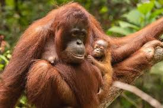

Orang Utan
Ape-like shape, shaggy reddish fur and grasping hands and feet
About Orang Utan
| Characteristic | Value |
|---|---|
| Weight | 70 to 165 pounds |
| Size | 4 to 5 feet tall |
| Speed | 6 kph (4 mph) |
| Lifespan | 30 to 40 years |
| Foods | Fruit, leaves, insects, bark, nuts |
| Predators | Leopards, snakes, crocodiles, tigers |
| Family | Primates |
| Scientific name | Pongo |
| Numbers left | Just over 100,000 Bornean, fewer than 14,000 Sumatran, and less than 800 Tapanuli orangutans left |
| Conservation Status | Critically endangered |
Fun Fact
Unlike other great apes, such as chimpanzees, gorillas and bonobos, these gangly guys don’t like to live in groups. A female will usually have a baby (or two) with her, but males like to be alone.
Orangutans are noisy creatures when they want to be, making loud howls and bellows that can be heard for miles around! It’s usually the males that make these calls so that they can stay out of each other’s territory.
The orangutan is one of humankind’s closest relatives – in fact, we share nearly 97% of the same DNA! Its name comes from the Malay words “orang hutan“, meaning “human of the forest“.
Some Sumatran orangutans use tools - like sticks to get termites, ants or bees out of tree holes. They also make a 'glove' out of leaves when handling prickly fruits or thorny branches.
My location
Gallery
 
